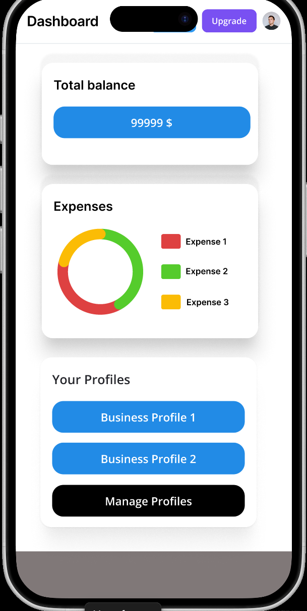
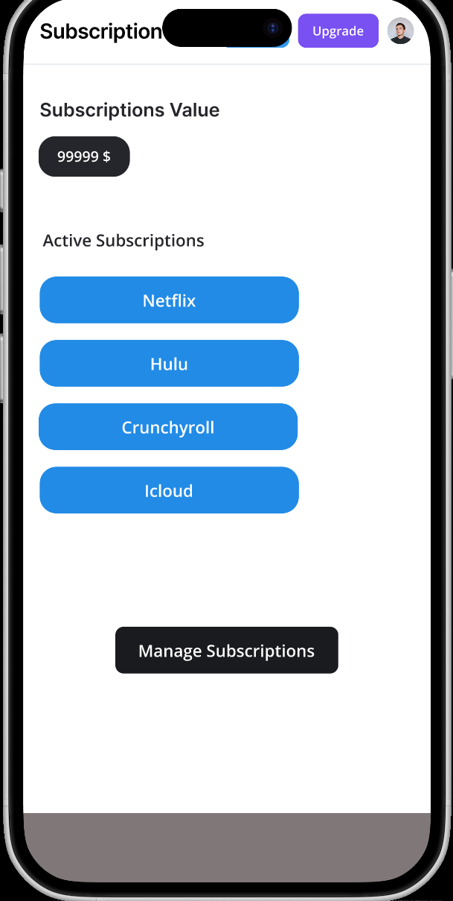
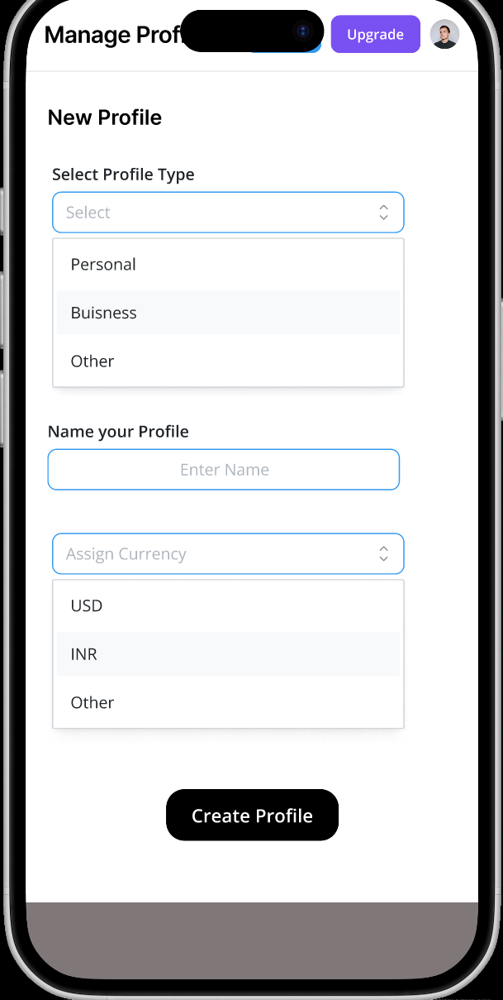
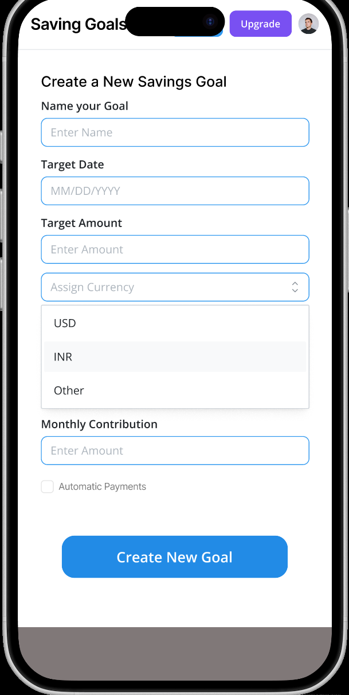

Case study · Usability testing
Finity
A personal finance app for people juggling more than one stream of income. Our team of four built a mid-fidelity prototype, then we each took a participant through the same four tasks. Sixteen task attempts later we had a list of things to fix, and two of them were about a single word.
- My role
- Researcher & interviewer
- Team
- Group 9, four graduate students
- Course
- HCI 430
- Methods
- Moderated remote testing, think aloud, satisfaction rating
The idea
Finity started from a pattern the four of us kept noticing in people our own age: the money is not in one place any more. A salary, a side business, a student loan, six subscriptions nobody remembers signing up for. Every one of those lives in a different app with a different password.
We built the concept around two people. Alex, 29, runs a food truck, an ecommerce store and some rental property, and switches between three platforms just to see where he stands. Cynthia, 22, just started her first salaried job and has six months before her loans start gathering interest. Alex needs everything in one view. Cynthia needs the app to do the remembering for her.
The bet we were testing
If one app can hold every account, people will tolerate a bit more setup at the start. That bet only pays off if the setup is findable, which is exactly what we pointed the sessions at.
Before any of that we sketched. Nothing precious, just enough to argue over. The palette came out mostly blue on purpose, because money is stressful and blue is not.
What we tested
We took the sketches into a mid-fidelity Figma prototype and wired four flows, the four things a new user has to get through in their first week. Anything outside those flows was deliberately left dead, and we told participants that up front.
- Manage subscriptions. Find the subscription page and cancel Netflix.
- Create a new profile. Separate a freelance side business from a day job.
- Create a savings goal. Save for a vacation and set a target.
- Upgrade free to premium. Move onto the paid plan.




Running the sessions
Four participants, all young professionals between 18 and 35, all on their phones. Each of us moderated one remote session over video with the prototype shared, working from a script we wrote together so the four sessions would actually be comparable.
I wrote and ran mine the way I used to run interviews as a reporter. Consent and recording first. Then background questions before anything is shown, so I know whether I am talking to someone who lives in a spreadsheet or someone who checks their banking app once a fortnight. Then the tasks, thinking aloud, and the same closing line every time:
“This is not a test of you. You cannot do anything wrong here, and negative feedback does not hurt anyone. Just tell me what you are thinking as you go.”
From the session scriptAfter every task I asked the same follow-ups: was it where you expected, what did you make of the navigation, what about the button labels, was anything missing, and finally a satisfaction rating from 1 to 5. The rating is not the finding. It is the thing that makes people explain themselves, and the explanation is the finding.
Note on the numbers below: four participants is a small sample, and it is not meant to be statistically anything. The ratings are here because the spread between them tells you where to look, not because 4.4 means something on its own.
What we heard
Everything scored well, which is the trap. When every task lands above four you have to go and read the transcripts, because the interesting material is in what people said on the way to giving you a four.
Task 1 · Manage subscriptions
4.4/5Mean of 4
Worked
- Every participant found the page, and most said it was where they expected.
- “I like that it wasn’t hidden” came up more than once. Canceling is usually buried and people notice when it is not.
- One participant specifically called out the color on the cancel confirmation as helpful.
Did not
- The cancel warning does not say what is actually being canceled, or when it stops.
- Two people wanted the vendor’s own details, a phone number or a link, in case they had to finish the cancellation elsewhere.
- We tracked spend year to date. Subscriptions bill monthly, and participants read the number the wrong way round because of it.
“I’d want to see if the price has increased suddenly, which the app would show. That’s helpful.”
Participant 1, biotech engineerTask 2 · Create a profile
4.2/5Mean of 3
Worked
- The form itself was straightforward and nobody asked for extra fields.
- One participant defended the word “profile” unprompted: calling it “account” would collide with bank accounts.
Did not
- The lowest scoring task, and the only one where a participant pushed back on our language.
- Not everyone found it straight away. One said it needed to be clearer where to go.
“Profile creation did have a slightly corporate ring to it. Maybe just call it new money stream?”
Participant 3Two participants, opposite conclusions, both with a good reason. That is the useful kind of disagreement: it says the concept is right and the word is carrying too much weight. We kept the feature and put the label on the list to test again.
Task 3 · Create a savings goal
4.5/5Mean of 4
Worked
- Described as “very easy” and “smooth” once found. Highest rated task alongside the upgrade flow.
- Labels did their job. One participant said he could guess what was behind each one, which is the whole point of a label.
Did not
- Two of four went to “Budget” first. Saving and budgeting are the same idea in most people’s heads.
- One participant felt the flow had more steps than other apps ask for.
- Another wanted the option to drop an opening contribution in at the moment the goal is created.
“First I clicked on budget, then I saw where the savings goals button was and it made sense.”
Participant 1The score says this task was fine. The behavior says half our participants took a wrong turn before it was fine. This is the finding I would have missed if I had only collected ratings.
Task 4 · Upgrade to premium
4.5/5Mean of 4
Worked
- Every single participant used the word “easy”. The one flow nobody hesitated in.
- Two could name what they were getting: AI recommendations on premium, unlimited goals on standard.
Did not
- Two others could only guess at the difference between the tiers, and both asked for a side by side comparison.
- Two expected a card entry step and were unsettled when the flow finished without one.
“This task compared to the others was very simple. I think you need a credit card input somewhere though.”
Participant 2Easiest task, and still the one carrying the most commercial risk. People were about to pay us and could not confidently say what for. A flow can be frictionless and unconvincing at the same time.
What changed
We pooled the four sessions and turned the pattern into four decisions rather than a list of complaints.
1. Fix the words before the screens
“Budget” was swallowing “savings goals”, and “profile” read as corporate to one participant and as exactly right to another. Both go back into the next round of testing as label options rather than being settled by whoever argues hardest in the team call.
2. Give the app a proper home screen
The hesitation in tasks 2 and 3 was discoverability, not comprehension. Every participant who eventually found a feature understood it immediately. So we planned a home screen that acts as a launch point into every tool, plus tool tips at the specific spots where people stalled.
3. Make the paid tier legible
A side by side comparison of free against premium, and a payment step that appears where people already expect it. Two participants told us the same thing in different words, which was enough.
4. Tighten the subscription tool
Move spend tracking from year to date to monthly so it matches how subscriptions actually bill, spell out what a cancellation covers, and carry vendor contact details on the subscription record.
We also flagged our own inconsistency. Colors and menus drifted between flows because four people built four prototypes. No participant complained about it, but we were not going to let it through on that basis.
Looking back
The thing I would change is the rating question. Asking for a number after each task gave us four scores clustered between 4.2 and 4.5, and if we had stopped there the report would have said the prototype was fine. The prototype was not fine. Two of four participants went looking for savings goals in the wrong place, and both still rated the task highly, because they got there in the end and people are generous.
Next time I would record where people go first, before they self-correct, and treat that as the real measure. The number is a conversation starter. The wrong turn is the finding.
The part I would keep is the background questions. Knowing that one participant had spent six years in a job where mistakes are expensive told me how to read his caution later on, and I would not have had that if I had opened with the first task.